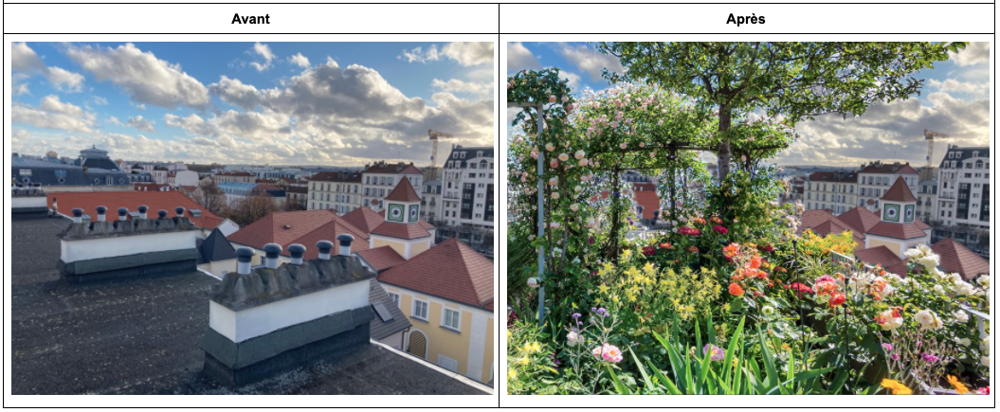
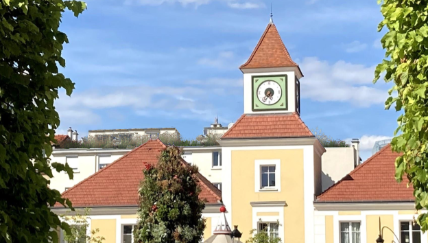
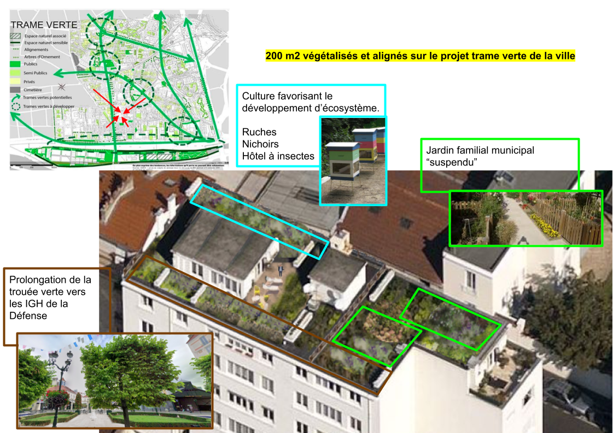
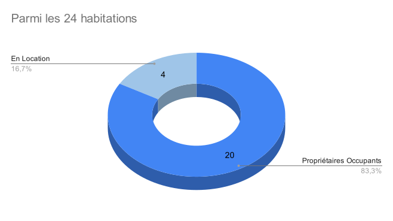
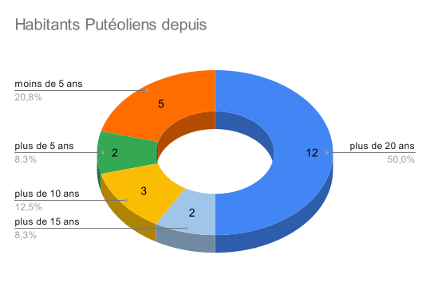
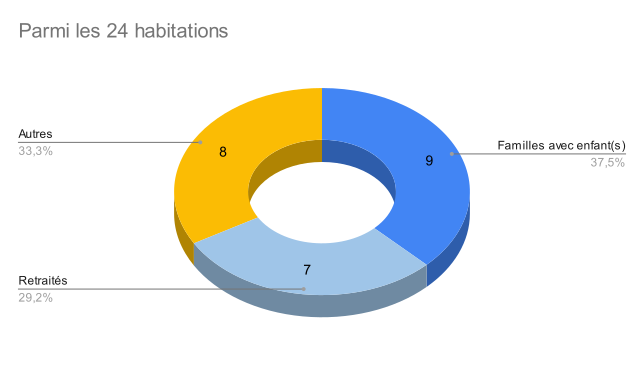

La toiture terrasse du 13 rue collin a une superficie de 250 mètres carrés. Sa dimension est assez grande pour apporter des bénéfices écologiques et paysagers. Sa superficie est assez petite pour ne pas engager une trop large expérimentation.
Prolonger de la trouée verte - Renforcer l'identité paysager de la ville



Espace aménagé pour les riverains du quartier:
Selon les études structurelles et la création d'accès adéquates, plusieurs conceptions paysagers sont envisageables.

Rénovation énergétique de l'immeuble:
Ce projet permettra au batîment de ne pas souffrir des canicules. Cela apportera naturellment de la fraîcheur aux 24 habitations:
  Budget:
Le projet peut se financer majoritairement par des subventions:
Le projet participe a la rétention des eaux pluviales

Le projet favorise la biodiversité

Le projet combat les ilots de chaleurs urbains

Le projet favorise le rafraîchissement de la ville (AMM3).
Capitaliser sur cette expérience
Si cela est concluant, le retour d'expérience permettra de dupliquer de tels projets. Un corridor écologique aérien pourra être envisagé.
Mme le Maire, ses équipes et les putéoliens sont en accord pour que la ville devienne un refuge de la biodiversité en développant ses espaces verts.
--> Le programme: